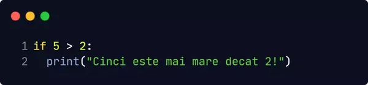
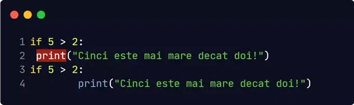

Indentarea face referire la spațiile de la începutul unei linii de cod.
Indentarea în Python este foarte importantă deoarece este folosită pentru a indica un bloc de cod. În schimb în alte limbaje de programare indentarea este folosită doar pentru lizibilitate.
În cazul în care omiteți indentarea Python va afișa o eroare de sintaxă. Numărul de spații depinde de dumneavoastră, însă trebuie folosit cel puțin unul.
În Python, o variabilă este creată atunci când i se atribuie o valoare.
În Python nu trebuie să precizăm tipul variabilei.
Pentru a comenta o singură linie de cod folosim #.